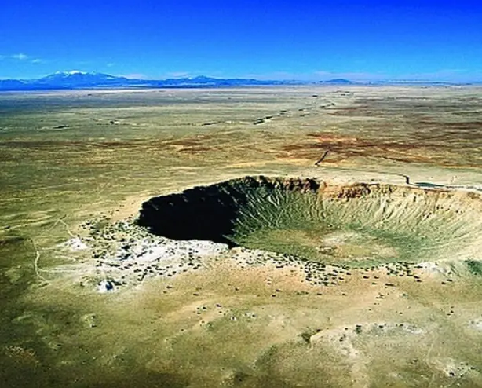
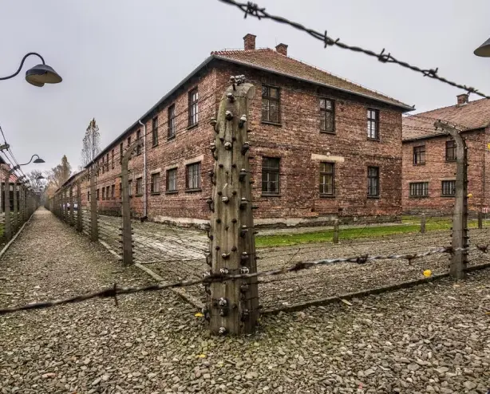
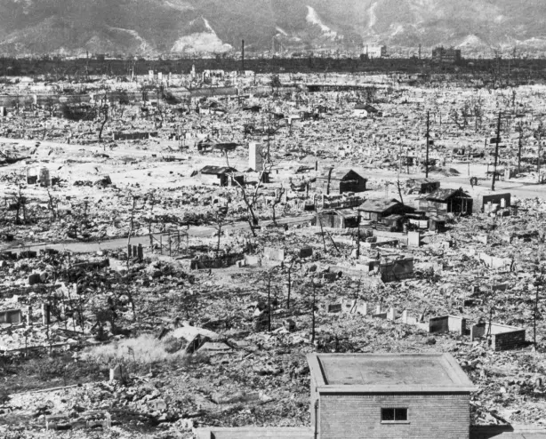
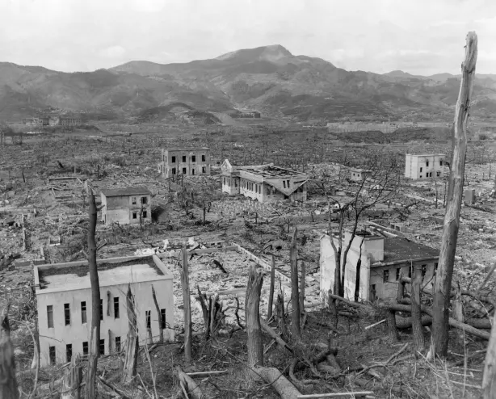

The unknown place of the first nuclear explosion

White Sands Missile Range
Beginning of nuclear research
The White Sands Missile Range is located in New Mexico, near the town of Socorro. This place isn’t very famous however the first nuclear explosion of History took place there July the 16th 1945. We remember the nuclear bombs dropped on Hiroshima and Nagasaki (Fat Man and Little Boy). But the first nuclear bomb ever exploded in the White Sands Missile Range.
The United States army planned to use nuclear armament to win World War Two against Germany and Japan for a very long time. So The Manhattan project got launched to build the first nuclear weapon.
“There has been a before and an after Trinity.”
First nuclear bomb ever
The project has finally come to a first attempt : Trinity after 6 years of research. The scientists weren’t sure that this would work though. That’s why they searched for an isolated and uninhabited place. They finally chose the White Sands Missile Range. During Trinity, the nuclear bomb named Gadget got dropped by a plane.
Its explosion liberated a plasma bubble 266 meters large and formed a gigantic crater. The attempt ended up being conclusive. It validated the launch of the two bombs during World War Two later. Project Manhattan mobilized over thirty sites and cost two american billion dollars to the USA since its beginning in 1939.
Incidence on me and the world
That’s why the launch of Trinity was photographed and entirely recorded. I will always remember these images and videos. I discovered them during my history lesson in High School. I didn’t feel very well after seeing this and I thought it was kind of the same feeling as the United States army must have experienced.
There has been a before and an after Trinity. The world would no longer be the same. It would evolve.
Similar places
All the places have marked the evolution of the world we live in. Their impact has been very big and changed the society we live in.
- 65 million
Chicxulub crater, where the meteorite which has surely provoked the extinction of the dinosaurs has rammed the Earth
1940
Auschwitz concentration camp, main complex where the nazis have exterminated the Jewish, it was a crime against humanity
1945
Hiroshima after the explosion of the first nuclear bomb which was made to destroy
1945
Nagasaki after the explosion of the second nuclear bomb which was made to destroy
2001

World Trade Center where the first terrorist attack took place in the USA which will drive to other terrorist attacks in all the world